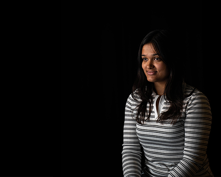
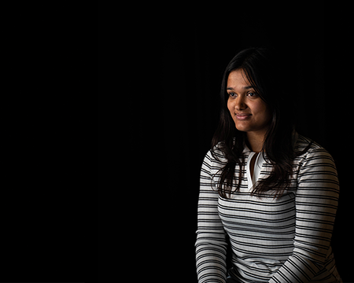

Fotografering:
Som multimediedesigner med speciale i fotografering, tilbyder jeg professionel billedebehandling, hvor belysning, komposition og korrekt farve spiller en vigtig rolle. Jeg skaber billeder med høj kvalitet og fokus på at fange temaer og stemninger. Mit arbejde spænder fra portrætter og produktbilleder til street photography. Neden for kan du se et par eksempler af mit arbejde.
Kreativ Portrætfotografi med Neonbelysning:
 

Beskrivelse:
Disse portrætter er skabt ved hjælp af kraftig neonbelysning, som giver billederne en dramatisk og intens stemning. Jeg har valgt at arbejde med stærke farver som rød og blå, som skaber kontrast og dybde. Belysningen er skabt for at fremhæve motivets ansigt og skabe en stærk visuel effekt. Hver portræt har sin egen unikke energi, og jeg har arbejdet på at fange både udtryk og karakter gennem belysningen
Jeg har sørget for at bruge den rette belysning for at få den ønskede effekt, og eksponeringen er justeret, så farverne virkelig træder frem. Efterbehandlingen i lightroom classic har hjulpet med at finjustere kontrasterne, så jeg får de bedste detaljer frem i både skyggerne og højdepunkterne
Minimalistiske Portrætter og Produktbilleder:
Beskrivelse:
I denne sektion har jeg arbejdet med en simpel hvid baggrund for at fremhæve både portrætter og produkter. Det minimalistiske udtryk giver en ren og stilfuld æstetik, hvor fokus er på motivet uden nogen distraktioner. Jeg har arbejdet med både portrætter og produkter, og forsøgt at fange personerne og objekternes skønhed og personlighed med et klart og professionelt udtryk.
Jeg har brugt studiebelysning for at sikre, at motivet er godt oplyst, uden at skabe hårde skygger. Målet var at få det bedste frem i både portrætterne og produkterne ved at holde det enkelt og elegant. Billederne er fin justeret i Lightroom Classic for at fremhæve glød og justere personernes pigment i huden.